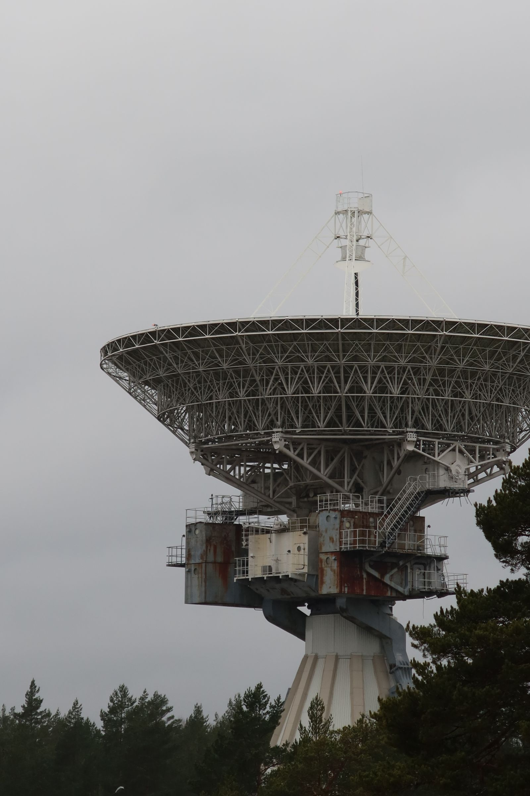

The signal that wasn’t
A survey’s headline candidate, verified before it became a headline.
- Client
- University H I survey group
- Facility class
- Survey interferometer + 32 m dish follow-up
- Data
- 1.9 TB spectral-line
- Duration
- 6 weeks
- Outcome
- Candidate resolved as interference; published as an RFI note
- Status
- Closed — protocol adopted by the group

The brief
A spectral-line survey had found a narrow candidate line near 1419 MHz — close to the hydrogen line, narrow enough to be interesting, strong enough to be dangerous. The principal investigator did the rarest thing in this field: before drafting any announcement, she hired someone whose job was to try to kill it.
Decisions
I re-reduced the data from raw with an independent flagging pass, so the candidate could not be an artefact of the survey’s own pipeline. Then the decisive test: frames of reference. A real celestial line shifts between sessions exactly as Earth’s motion says it should; this one sat fixed in the telescope’s own frame while the sky drifted past it. Off-source pointings and the drift pattern pointed the same way, and the candidate’s frequency matched an intermodulation product of a strong out-of-band transmitter — two lawful signals mixing in the receiver chain to manufacture an unlawful one inside the protected band.
Outcome
The group published the result as an interference note, with the verification protocol written up in full. The survey’s real catalogue went ahead uncontaminated, and the protocol — independent re-reduction, frame test, intermodulation check — is now the group’s standing procedure for any candidate. Nobody got a discovery. Everybody kept their credibility, which compounds longer.
“Priya cost us a headline and saved us a retraction. The interference note she wrote is now the most-cited methods reference our group has.”